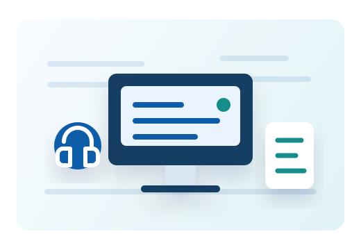
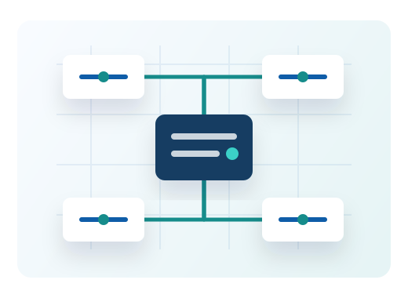

Используйте только рабочие подключения
Не подключайте личные роутеры, модемы и точки доступа к корпоративным розеткам. Такие устройства могут нарушить работу сети и создать риск утечки данных.
База знаний
Короткие регламенты и практические рекомендации по работе с корпоративной сетью, 1С, рабочими местами и технической поддержкой.

Сеть предприятия
Не подключайте личные роутеры, модемы и точки доступа к корпоративным розеткам. Такие устройства могут нарушить работу сети и создать риск утечки данных.
Рабочие файлы подразделений следует сохранять в согласованных общих папках. Это упрощает резервное копирование и доступ коллегам при замещении.
Учетная запись закреплена за конкретным сотрудником. Передача логина и пароля коллегам запрещена даже для срочных задач.
Учетные системы
Работа с 1С влияет на учетные и производственные процессы, поэтому любые ошибки доступа, зависания и некорректные данные важно фиксировать подробно.
Входите только под своей учетной записью и завершайте сеанс перед уходом с рабочего места.
Не закрывайте программу принудительно во время проведения документов, обмена или формирования отчетов.
При ошибке сделайте скриншот, запишите базу, документ, время возникновения и передайте данные в ИТ-отдел.
Новые права доступа оформляются через руководителя подразделения с указанием роли сотрудника.
Техническая поддержка
Чем точнее описана проблема, тем быстрее специалист сможет определить причину и предложить решение.
Укажите ФИО, подразделение, кабинет, телефон, название программы или оборудования и текст ошибки.
Добавьте скриншот, номер принтера, имя компьютера или время сбоя, если эти данные известны.
Специалист уточнит приоритет, согласует время работ и сообщит, если потребуется доступ к рабочему месту.

Рабочее место
Диагностика
Убедитесь, что сетевой кабель плотно подключен к компьютеру и розетке. Индикаторы рядом с разъемом обычно должны мигать.
Если сеть не работает у нескольких сотрудников в кабинете, сообщите об этом сразу: возможно, проблема на коммутаторе или линии.
Не изменяйте IP-адрес, DNS и параметры прокси самостоятельно. Это может усложнить диагностику и восстановление.
В заявке укажите имя компьютера, кабинет, время пропадания сети и ресурсы, которые не открываются.
FAQ
Сообщите в ИТ-отдел ФИО, подразделение и систему, к которой утрачен доступ. Для критичных систем может потребоваться подтверждение руководителя.
Проверьте питание, наличие бумаги и сообщение на дисплее. Укажите в заявке модель или инвентарный номер принтера, кабинет и документ, который не печатается.
Используйте форму на странице контактов, внутренний телефон или корпоративную почту. В обращении кратко опишите проблему и приложите скриншот, если он помогает понять ошибку.
Доступ оформляется через руководителя подразделения. В заявке нужно указать базу 1С, роль сотрудника и перечень операций, которые должны быть доступны.
Проверьте сетевой кабель и уточните, есть ли такая же проблема у коллег. Не меняйте сетевые настройки самостоятельно и передайте информацию в ИТ-отдел.
Заявка подается заранее. Нужно указать сотрудника, подразделение, рабочее место, требуемые программы, принтеры и сетевые ресурсы.
Все неисправности рабочих компьютеров, принтеров, сети, 1С и корпоративных сервисов фиксируются через ИТ-отдел. Срочные сбои лучше продублировать по внутреннему телефону.
Установка выполняется специалистами ИТ-отдела. Самостоятельная установка программ на рабочий компьютер допускается только после согласования.